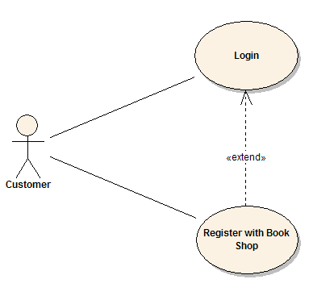
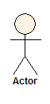
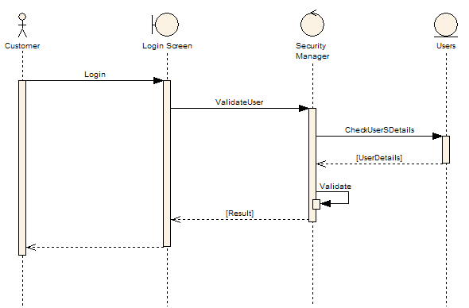
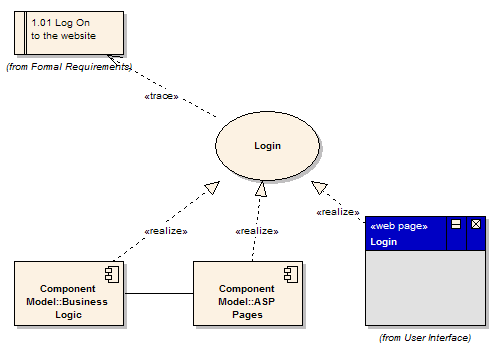

유즈케이스 모델
https://sparxsystems.com/resources/tutorials/uml/use-case-model.html
유즈케이스 모델은 새로운 시스템에 제안된 기능을 묘사합니다. 유즈케이스는 사용자(사람 또는 기계)와 시스템 사이에 별개의 상호작용 단위로 표현됩니다. 이 상호작용은 계좌 생성 또는 계좌 상세 보기 등과 같은 한가지 의미를 가지는 동작을 의미합니다.
각각 유즈케이스는 다른 유즈케이스의 기능을 포함하거나 자신만의 동작을 포함하여 다른 유즈케이스를 확장할 수 있는 고안될 시스템에 만들어지는 기능들을 묘사합니다.

유즈케이스는 일반적으로 다음을 포함합니다.
- 유즈케이스를 설명하는 일반적인 주석과 메모
- 요구사항 - 유즈케이스가 <주문을 갱신하는 기능>과 같은 최종 사용자에게 제공해야하는 공식적인 기능적 요구사항입니다. 이는 구조화된 방법론에서 발견되는 기능 사양에 해당하며 유즈케이스가 일부 작업을 수행하거나 시스템에 값을 제공하는 일종의 계약의 형태를 가집니다.
- 제약조건 - 유즈케이스가 동작하는데 있어서 할 수 있는/할 수 없는 공식적인 규칙과 제약사항입니다. 다음을 포함합니다.
- 사전조건은 유즈케이스가 실행되기 전에 이미 발생했거나 있어야되는 조건입니다. 예로 들어, <주문 생성>은 <주문 수정>의 사전조건입니다.
- 사후조건은 유즈케이스가 완료되면 한번만 참이 되는 조건입니다. 예로 들어, <주문이 수정되고 고정됩니다>
- 불변성은 유즈케이스가 동작하는 동안 항상 참으로 유지되는 조건입니다. 예로 들어, 주문은 항상 고객번호를 포함합니다.
- 시나리오 - 유즈케이스를 수행하기 위해 취한 단계에 대한 공식적이고 순차적인 설명 또는 이벤트의 흐름입니다. 예외적인 상황과 대안 경로를 수용하기 위해 다수의 시나리오를 포함할 수 있습니다. 항상 텍스트로 생성되며 시퀀스 다이어그램의 텍스트 표현으로 볼 수 있습니다.
- 시나리오 다이어그램 - 작업의 흐름을 묘사하는 시퀀스 다이어그램. 시나리오와 유사하지만 그래픽적으로 표현됩니다.
- 구현 단계, 버전번호, 복잡성 평가, 스테레오 타입, 상태를 추가적인 속성으로 가집니다.
액터
유즈케이스는 일반적으로 액터와 관계를 가지게 됩니다. 액터는 사람이나 기계를 의미하며 목표를 달성하는데 도움이 되는 의미있는 행동을 수행하기 위해 시스템을 사용하거나 상호작용하게 됩니다. 액터는 시스템과 행동에 대한 범위에서 전체적인 역할을 정의하기 위해 유즈케이스에 접근합니다.

유즈케이스간 Include와 Exclude 관계
하나의 유즈케이스는 일반적은 처리과정으로 다른 유즈케이스에 기능적으로 포함될 수 있습니다. 일반적으로 Include된 유즈케이스는 기본 경로가 실행될 때 매번 호출되어진다고 가정합니다. 예로 들어, 선택한 주문을 수정하기 전에 선택하기 위해 고객의 주문을 목록화할 때, <주문 목록화> 유즈케이스는 <주문 수정> 유즈케이스가 실행될 때 매번 포함되어 집니다.
유즈케이스는 한개 이상의 다른 유즈케이스에 포함될 수 있으며 자주 반복사용되는 공통적인 동작 요소를 유즈케이스에 포함하여 기능적 중복이 발생함을 감소시키는데 도움이 됩니다.
유즈케이스는 다른 유즈케이스에서 동작을 확장할 수 있으며, 일반적으로 예외사항이 발생할 때 사용됩니다. 예로 들어, 사용자가 고객 주문의 특정유형을 수정하기 전에 상위 권한자에게 승인을 받아야하는 경우 <승인 받기> 유즈케이스는 일반적인 <주문 수정> 유즈케이스의 선택적 확장이 됩니다.
시퀀스 다이어그램
시퀀스 다이어그램은 객체 상호작용의 흐름을 시각적으로 표현해줍니다. 일반적으로 유즈케이스를 실행하는데 있어서 필요한 사용자 또는 액터, 객체와 컴포넌트간 상호작용을 보여줍니다. 하나의 시퀀스 다이어그램은 단일 유즈케이스의 시나리오 또는 이벤트의 흐름을 보여줍니다.
시퀀스 다이어그램은 분석 초기에 필요한 객체를 판별하고 디자인 후반에 객체를 검증하는데 사용되는 시나리오 문서로 탁월 합니다. 다이어그램은 한 객체에서 다른 객체로의 메시지 흐름을 보여주며 클래스나 객체에서 제공하는 메소드나 이벤트에 연결됩니다.
아래 시퀀스 다이어그램 예제는 유즈케이스 시나리오에서 왼쪽의 사용자나 액터가 이벤트의 흐름을 시작하는 모습을 보여줍니다. 객체간 메시지의 흐름은 최종 모델에서는 클래스의 동작으로 전환됩니다.

구현 다이어그램
유즈케이스는 시스템이 구축될 때 가지게될 기능적 요소의 일반적인 설명입니다. 구현 다이어그램은 유즈케이스의 기능이 새로운 시스템에 구현될 디자인적 요소(컴포넌트, 클래스 등)를 문서화하기 위해 유즈케이스에 연결한 것 입니다. 이것은 시스템 디자이너나 고객, 시스템을 구축할 팀에게 고차원적 추적성을 제공해줍니다. 컴포넌트나 클래스에 연결된 유즈케이스의 목록은 해당 컴포넌트에서 구현되어야할 최소한의 기능을 표현합니다.

위 예제는 로그인 유즈케이스는 1.01 웹사이트에 로그인 이라는 형식적 요구사항을 구현한 것을 보여줍니다. 또한 로그인 기능의 일부 또는 전체를 Business Login 컴포넌트와 ASP Pages 컴포넌트에서 구현한다는 것을 보여줍니다. 추가적으로 Login(웹페이지)를 통해 로그인 유즈케이스를 구현하는 것을 보여줍니다. 이러한 구현이나 실체화 연결은 형식적 요구사항부터 유즈케이스를 통해 컴포넌트와 화면의 추적성을 보여줍니다.